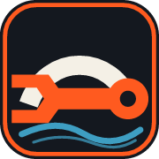
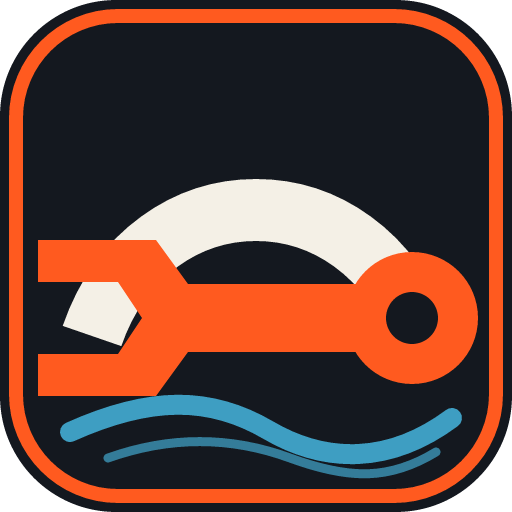

Brand mark
The mark.
An original badge for Jacksonville Mobile Mechanics. The arch is the city’s bridges, the wrench is the work, and the line under it is the river. The plate is charcoal, so the icon holds up on light and dark backgrounds.
Icon
Horizontal lockup
Cream wordmark for dark backgrounds. Ink wordmark for light backgrounds. Lettering is drawn as paths, so it does not depend on a font being installed.
Small sizes
The favicon is the same badge. At 16 and 32 pixels the arch and the wrench are the shapes that remain.


Color
Charcoal #14181F
Safety orange #FF5A1F
Cream #F4F0E6
River #3E9EC2
Orange is the action color: the wrench, the rule, the buttons. Cream is the bridge and the wordmark on dark. Use the river line only inside the mark.